第 1 页 · 项目2
项目2
为智能体赋能
插件扩展、工作流编排与卡片呈现
《智能体项目开发实战（扣子）（微课版）》
人民邮电出版社 | 工信精品人工智能系列教材
第 2 页 · 目录
目录
1
通过插件拓宽智能体的能力边界
插件概念、分类、基本用法与自定义插件
2
基于工作流打造高效流水线
工作流逻辑结构、分支流程与循环流程
3
基于对话流实现有记忆的连续对话
对话流与工作流的区别、节点配置
4
基于卡片配置高效信息看板
卡片概念、基本用法与数据绑定
5
课后实践
七大实践任务巩固所学知识
项目2 为智能体赋能
2
第 3 页 · 项目引入
项目引入
从"能说会道"到"能干实事"
项目1构建了能理解指令的智能体，但能力停留在"对话"层面。面临查询实时股价等复杂任务时，仅靠大模型显得力不从心。
本项目核心目标
通过为智能体添加插件、编排工作流、设计对话流和配置卡片，系统性地拓宽智能体的能力边界，使其从"能说会道"的聊天伙伴，变为"能干实事"的智能助手。
三维学习目标
知识目标
理解插件的概念并了解其分类
理解工作流与对话流的流程
了解卡片的概念和用法
能力目标
能够为智能体添加插件
掌握工作流的基本编排方法
能够设计对话流
能够运用卡片优化输出界面
素养目标
培养严谨、细致的工作作风
培养流程化工程思维
培养接口规范意识
项目2 为智能体赋能
3
第 4 页 · 2.1
2.1
通过插件拓宽智能体的能力边界
理解插件概念与分类，掌握为智能体添加插件的方法，学会创建自定义插件
第 5 页 · 2.1.1
2.1.1
什么是插件
插件本质上是一个工具集，它通过标准的API，把外部服务或专业功能连接到智能体上，让智能体不再局限于基础对话，而是能够直接获取实时、准确的外部信息或执行特定的操作。
插件的主要特点
功能聚合
一个插件封装多个工具，共同完成复杂任务
即插即用
独立安装、更新或卸载，无须修改核心代码
规范接入
按平台接口标准开发，能被智能体正确识别
插件中的工具
工具是实现某个具体功能的单元，每个工具都是一个独立的API。智能体调用插件时，实际上是在调用插件中的某个工具。同一插件内的不同工具必须使用相同的域名。
示例：天气查询插件可能包含两个工具：
查询当前天气：http://api.weather.com/current
查询未来天气：http://api.weather.com/forecast
项目2 为智能体赋能
5
第 6 页 · 2.1.2
2.1.2
插件分类
扣子编程拥有丰富的插件，包括资讯阅读、旅游出行、效率办公、图片理解等，同时也集成了多模态模型。
插件商店插件
上架到扣子插件商店中的插件，分为两类：
官方插件 — 由扣子编程提供全面的技术支持和维护，确保稳定性与兼容性，建议优先使用
资源库插件 — 由开发者开发、维护和更新，仅供当前账号使用
插件类型
资讯阅读类
旅游出行类
效率办公类
图片理解类
多模态模型类
插件的使用方式
插件可以直接在智能体内使用，拓宽智能体的能力边界；也可以作为节点添加到工作流中，执行特定的操作。插件让智能体从"只能聊天的伙伴"升级为"多才多艺的助手"。
智能体内使用
工作流节点使用
能力边界拓宽
项目2 为智能体赋能
6
第 7 页 · 2.1.3
2.1.3
插件的基本用法
使用插件的5个关键步骤
STEP 1
选择并添加插件
STEP 2
配置插件参数
STEP 3
编写提示词说明插件用法
STEP 4
确认模型支持工具调用
STEP 5
测试并检查插件执行结果
插件参数
输入参数（入参）
插件执行任务所需的具体信息，用于明确告知插件需要执行什么操作。如绘画插件的size、style等。
输出参数（出参）
插件完成任务后返回的数据，通常以JSON格式返回。在工作流中，一个插件的输出常为下一个节点的输入。
当插件未按预期工作时，应首先检查输入参数是否正确传递，其次查看输出参数返回的内容，这是定位问题的重要方法。
项目2 为智能体赋能
7
第 8 页 · 同步训练2-1
同步训练2-1
为智能体添加插件
以"信息查询助手"为例，演示添加插件的完整过程
1
创建智能体
登录扣子编程，新建名为"信息查询助手"的智能体。在"编排"面板的"技能"区域找到"插件"，单击"+"按钮添加插件。
2
添加搜索插件
搜索"头条搜索"官方插件，展开工具列表，添加search工具用于内容搜索。确认模型支持工具调用。
3
添加天气插件
搜索"墨迹天气"官方插件，添加DayWeather工具。编辑参数，关闭start_time和end_time，使查询默认返回当日天气。
4
编写提示词
在"人设与回复逻辑"面板中编写提示词，明确：
涉及新闻/热点时调用头条搜索插件
涉及天气查询时调用墨迹天气插件
规定回复格式（标题/来源/摘要/城市/温度等）
5
测试调试
在"预览与调试"面板中输入搜索请求和天气查询请求进行测试：
验证搜索功能是否正常返回结果
验证天气查询是否返回当日天气
检查插件调用是否符合提示词规则
项目2 为智能体赋能
8
第 9 页 · 同步训练2-1
同步训练2-1
为智能体添加插件
以"信息查询助手"为例，演示添加插件的完整过程
项目2 为智能体赋能
8
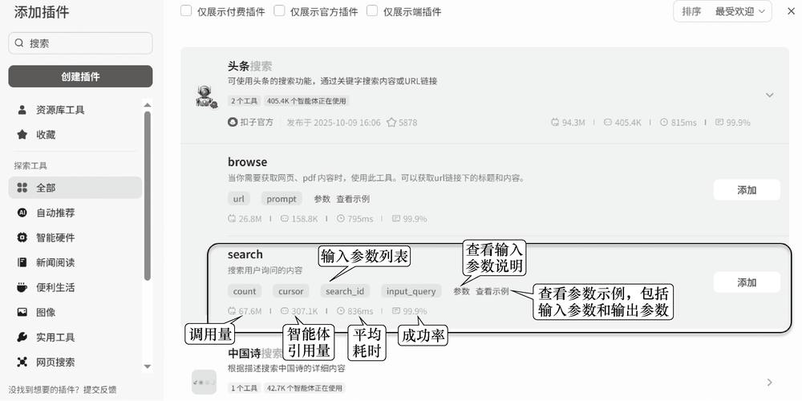
第 10 页 · 2.1.4
2.1.4
自定义插件
除了使用官方插件和第三方插件，开发者还可以创建自定义插件，将AI能力与特定业务、数据源或第三方服务深度集成。
四种创建方式
基于API创建
直接将公开使用或本人开发的API配置为插件
导入配置文件
导入定义API的JSON文件或YAML文件来创建插件
使用扣子IDE
在在线编码环境中创建插件，自动托管运行代码
代码注册
使用代码解析器，解析API配置文件来创建插件
注意：无论采用哪种方式创建插件，都必须发布插件才可以被智能体调用。
插件参数的数据类型
| 数据类型 | 描述 | 示例 | 适用场景 |
| String | 文本字符串 | "北京市" | 用户输入文本、URL等 |
| Integer | 整数类型 | 42、-5、0 | 页码、数量、年龄等 |
| Number | 数字（可含小数） | 2.15、-12.5 | 价格、温度、金额等 |
| Object | 键值对集合 | {"name":"Alice"} | 用户信息、商品详情等 |
| Array | 有序值列表 | ["苹果","香蕉"] | 标签列表、文件路径等 |
| Boolean | 布尔类型 | true、false | 功能开关、状态判断等 |
项目2 为智能体赋能
9
第 11 页 · 案例实战2-1
案例实战2-1
创建自定义插件查询汇率
基于扣子IDE创建查询汇率的插件，调用Frankfurter货币数据API（免费、开源，追踪欧洲中央银行发布的官方参考汇率）。
1. 创建插件
进入"资源库"页面，选择"资源"→"插件"
设置插件名称：汇率查询
插件描述：查询实时货币汇率
选择"云侧插件-在Coze IDE中创建"
IDE运行时：Node.js
项目2 为智能体赋能
第 12 页 · 案例实战2-1
案例实战2-1
创建自定义插件查询汇率
基于扣子IDE创建查询汇率的插件，调用Frankfurter货币数据API（免费、开源，追踪欧洲中央银行发布的官方参考汇率）。
2. 创建工具
在插件详情页面单击"在IDE中创建工具"
设置工具名称和工具介绍
项目2 为智能体赋能
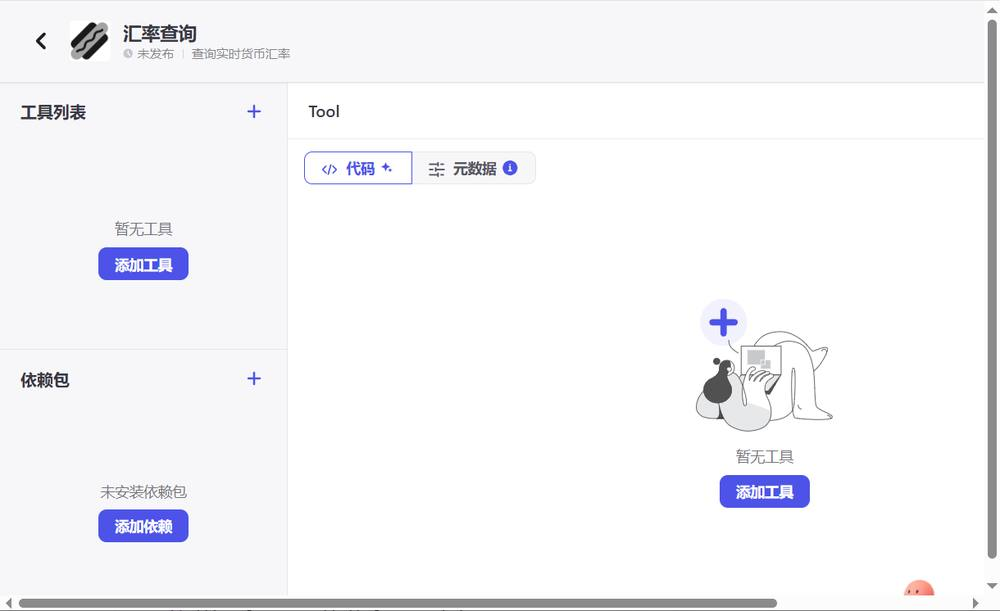
第 13 页 · 案例实战2-1
案例实战2-1
创建自定义插件查询汇率
基于扣子IDE创建查询汇率的插件，调用Frankfurter货币数据API（免费、开源，追踪欧洲中央银行发布的官方参考汇率）。
3. 编写代码
在IDE"代码"选项卡中编写Node.js代码
使用axios调用Frankfurter API
添加依赖包"axios"并安装
核心代码逻辑
// 导入axios用于HTTP请求
import axios from 'axios';
// 主处理函数
export async function handler(
{ input, logger }) {
// 1. 获取输入参数
const from = input.fromCurrency;
const to = input.toCurrency;
// 2. 构建API请求URL
const url = `https://api.
frankfurter.app/latest?
from=${from}&to=${to}`;
// 3. 调用API并返回结果
const res = await axios.get(url);
return res.data;
}
项目2 为智能体赋能
10
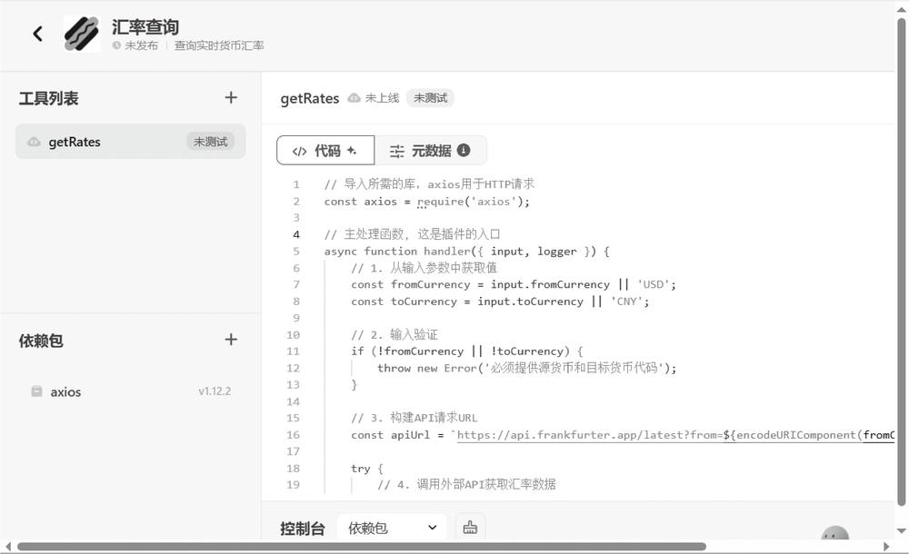
第 14 页 · 2.2
2.2
基于工作流打造高效流水线
理解工作流的逻辑结构，掌握工作流的编排方法，学会设计分支流程和循环流程
第 15 页 · 2.2.1
2.2.1
为什么要使用工作流
工作流是一系列可执行指令的集合，为AI应用和智能体的数据流转和任务处理提供了一个结构化框架。
智能体开发痛点及工作流解决方案
| 智能体开发痛点 | 工作流解决方案 | |
| 1 | 任务不可控，大模型基于概率生成结果，结果不稳定 | 流程标准化 — 将复杂任务拆解为有序、可执行的步骤 |
| 2 | 功能单一，难以处理多步骤、多工具协同的复杂业务 | 多工具编排 — 可视化地串联插件、代码、条件判断等不同节点 |
| 3 | 难以维护、迭代，冗长的提示词难以调试和优化 | 模块化与复用 — 可嵌套调用工作流，像搭积木一样构建复杂应用 |
适用场景
当完成目标任务需要较多步骤，且对结果的准确性、格式有严格要求时，可以通过搭建工作流来实现。例如：处理客户售后投诉时，先识别问题 → 查询订单 → 生成解决方案 → 记录处理日志。
工作流通过结构化的流程设计、可视化的编排界面和强大的集成能力，将大模型的潜力转化为稳定、可靠、可复用的生产力
项目2 为智能体赋能
13
第 16 页 · 2.2.2
2.2.2
工作流的逻辑结构
工作流通过连接可视化的节点，将复杂的任务分解为一系列有序、可自动执行的步骤，其核心在于模块化和数据流驱动。
基本节点 — 骨架
开始节点
工作流的唯一入口，定义和接收启动所需的输入参数
结束节点
工作流的唯一出口，整合并返回最终结果
处理与逻辑节点
处理节点
大模型节点
插件节点
代码节点
逻辑节点
选择器节点
循环节点
批处理节点
数据流 — 血管
数据以键值对形式在节点间传递
上游节点的输出作为下游节点的输入参数
通过拖曳和连线连接节点，"线"确定数据流转方向
标准工作流示意
开始节点
处理节点A
处理节点B
逻辑节点
结束节点
一个工作流可以看作一个函数：开始节点定义输入参数（输入变量），结束节点定义输出参数（输出变量），中间节点相当于函数体，用于实现具体的功能。
项目2 为智能体赋能
14
第 17 页 · 案例实战2-2
案例实战2-2
双语社交文案生成器
用户上传一张图片，智能体自动理解图片内容，生成适用于社交媒体的中文、英文创意文案。展示插件节点与大模型节点的协同工作。
1. 创建工作流
工作流名称：SocialCaption_Generator
工作流描述：根据用户上传的图片，自动生成中文、英文创意文案
2. 配置开始节点
user_image：Image类型，必填，用于接收用户上传的图片
style：String类型，默认值"浪漫的"，接收文案风格描述
3. 添加图片理解节点
选择"图片理解"插件，添加imgUnderstand工具
配置url变量引用开始节点的user_image
4. 添加创意文案生成节点
添加大模型节点，选择创意能力强的模型
输入变量引用图片理解的输出和style变量
系统提示词引导生成50字以内的活泼文案
工作流流程（上半部分）
开始节点（user_image + style）
图片理解节点（imgUnderstand）
创意文案生成节点（大模型）
文案翻译节点（大模型）→ 待续
提示：大模型节点的系统提示词负责设定角色和原则；用户提示词负责提供数据和明确动作。两者协同工作才能确保生成最精准的回复。
项目2 为智能体赋能
15
第 18 页 · 案例实战2-2
案例实战2-2
双语社交文案生成器
5. 添加文案翻译节点
添加大模型节点，选择翻译能力强的模型
输入变量引用创意文案生成节点的output
系统提示词引导翻译成地道英文
6. 配置结束节点
设置两个输出变量：output_cn和output_en
配置返回文本格式，引用输出变量
7. 测试与发布
单击"试运行"按钮，上传图片进行测试
查看每个节点的运行状态和输入输出
查看日志跟踪和排查问题
8. 在智能体中调用
新建"双语社交文案生成器"智能体
添加已发布的工作流
编写提示词，配置开场白
上传图片测试，验证中英文文案质量
完整工作流
开始节点
图片理解（插件节点）
创意文案生成（大模型节点）
文案翻译（大模型节点）
结束节点（output_cn + output_en）
核心价值：
本例涵盖插件调用、多模型协作和结构化输出，能够很好地展现工作流的核心价值。整个搭建过程无须编码，通过拖曳和连线即可完成。
项目2 为智能体赋能
16
第 19 页 · 案例实战2-2
案例实战2-2
双语社交文案生成器
项目2 为智能体赋能
16
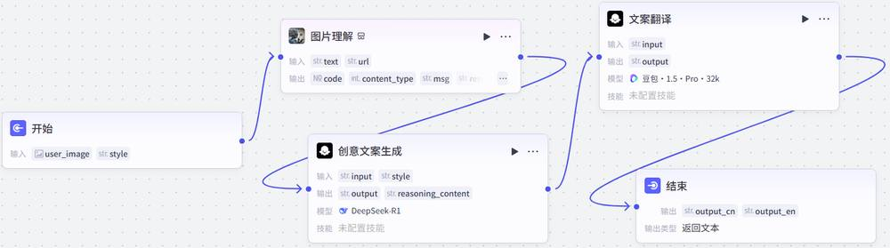
第 20 页 · 案例实战2-2
案例实战2-2
双语社交文案生成器
项目2 为智能体赋能
16
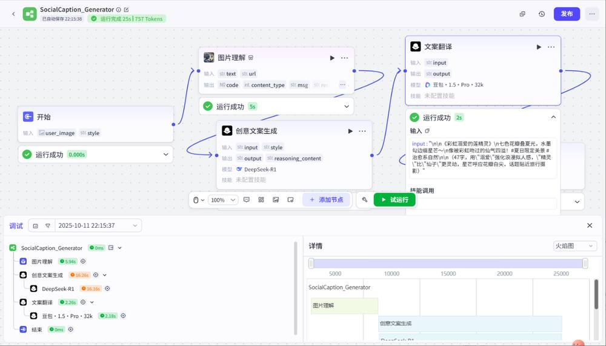
第 21 页 · 案例实战2-2
案例实战2-2
双语社交文案生成器
项目2 为智能体赋能
16
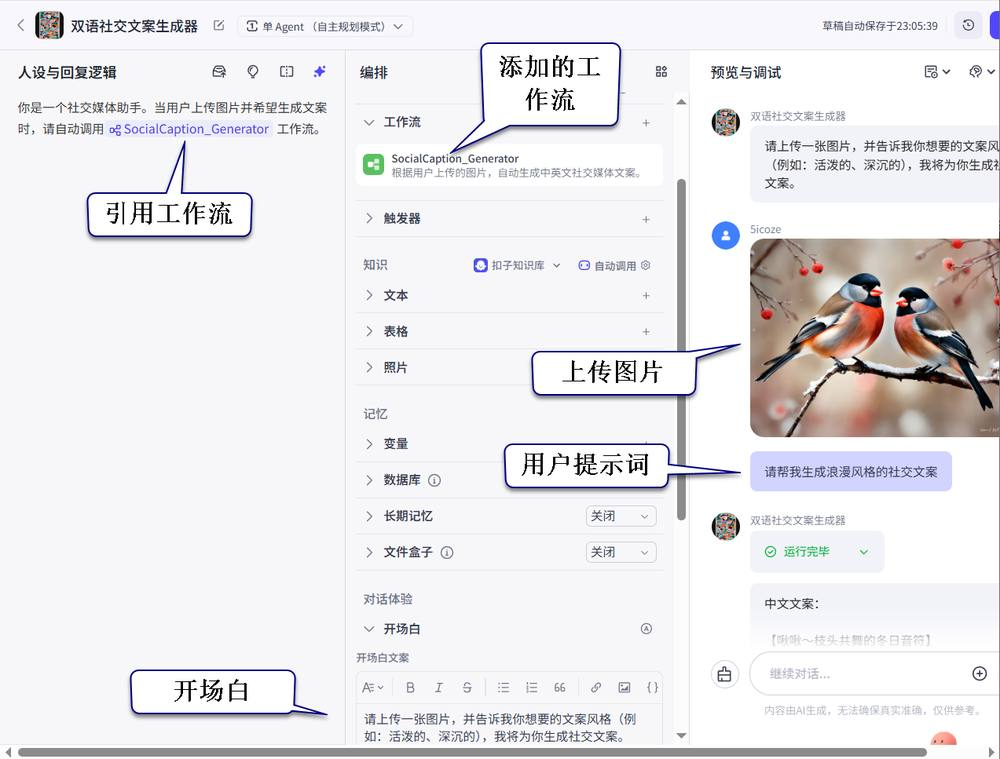
第 22 页 · 案例实战2-3
案例实战2-3
基于分支流程的智能应答助手
分析用户输入的自然语言文本，根据意图类型（问候、提问、夸奖）自动选择并生成最合适的回应。展示选择器节点的分支流程设计。
1. 创建工作流
工作流名称：response_assistant
开始节点输入变量：text_input（String，必填）
2. 添加意图分类节点
添加大模型节点，命名为"意图分类"。系统提示词要求严格分析用户输入，输出三种之一：
greeting — 问候或打招呼
question — 提出具体问题
compliment — 夸奖或赞扬
分支流程设计
开始节点
意图分类（大模型节点）
选择器节点
问候回应
提问回应
夸奖回应
设计要点：
意图分类节点输出严格的分类标签（greeting/question/compliment），选择器节点根据标签值进行分支判断，确保流程走向可控。
项目2 为智能体赋能
17
第 23 页 · 案例实战2-3
案例实战2-3
基于分支流程的智能应答助手
分析用户输入的自然语言文本，根据意图类型（问候、提问、夸奖）自动选择并生成最合适的回应。展示选择器节点的分支流程设计。
3. 添加选择器节点
在意图分类节点后添加选择器节点，配置3个条件分支：
分支1：type == "greeting"（问候）
分支2：type == "question"（提问）
分支3：否则（即 compliment）
项目2 为智能体赋能
17
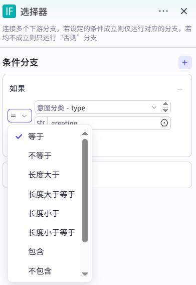
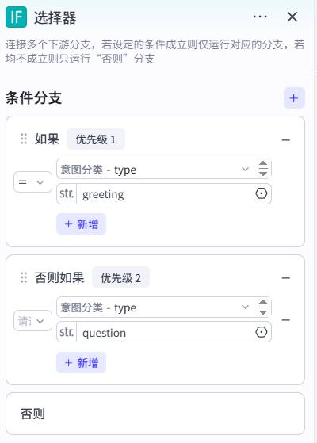
第 24 页 · 案例实战2-3
案例实战2-3
基于分支流程的智能应答助手
4. 为不同分支配置回应节点
| 条件分支 | 系统提示词角色设定 | 回应风格 |
| 问候 | 热情友好的助手 | 生成更热情、更具体的回应问候语 |
| 提问 | 耐心细致的助手 | 简洁、清晰、准确地解答问题 |
| 夸奖 | 谦逊有礼的助手 | 表示感谢，表达继续服务的意愿 |
5. 整合输出结果
使用变量聚合节点聚合所有分支的处理结果
将3个分支的大模型节点输出赋值给聚合变量
连接变量聚合节点与结束节点
项目2 为智能体赋能
18
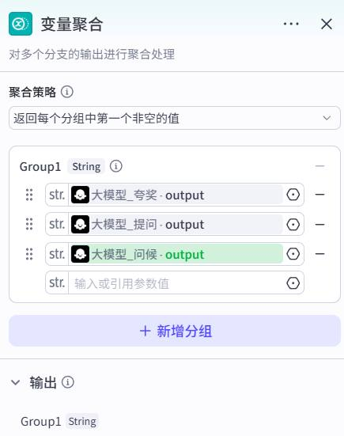
第 25 页 · 案例实战2-3
案例实战2-3
基于分支流程的智能应答助手
关键知识点
该工作流通过选择器节点根据条件做出判断，实现智能选择，这是区别于单线流程的关键。
应尽可能采用模块化设计，让每个节点负责一个任务，便于测试、调试和复用。
变量聚合节点的作用是将多分支的输出统一整合，确保无论哪个分支执行，都能向用户返回一致格式的结果。
项目2 为智能体赋能
18
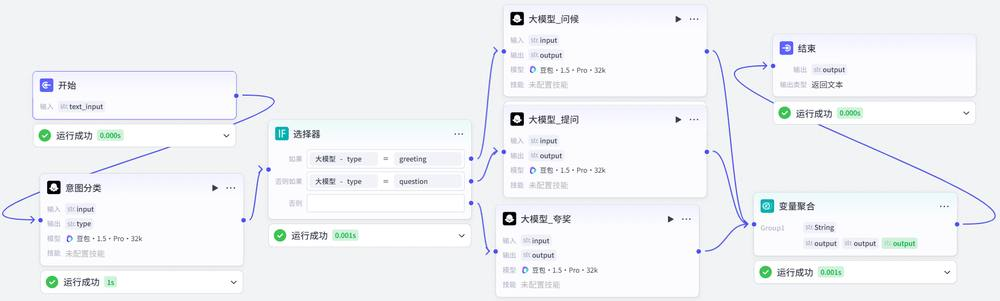
第 26 页 · 案例实战2-3
案例实战2-3
基于分支流程的智能应答助手
6. 测试与发布
输入"你好呀"测试问候分支
输入"句子与词语有何不同"测试提问分支
输入"你真棒"测试夸奖分支
验证各分支是否生成合适的回应
项目2 为智能体赋能
18
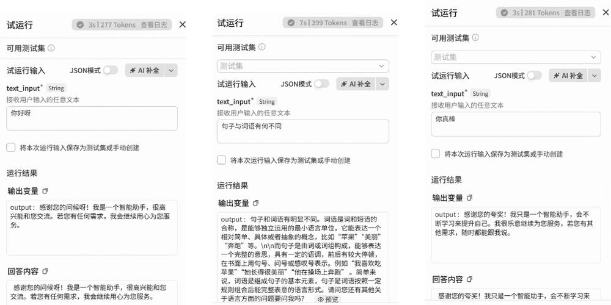
第 27 页 · 案例实战2-4
案例实战2-4
古诗逐句赏析器
自动拆分古诗，并为每一句生成赏析文案。展示循环节点的批量处理能力。
1. 创建工作流
工作流名称：poem_analyzer
开始节点输入变量：full_poem（String，必填）
2. 添加诗句拆分节点
添加大模型节点，命名为"诗句拆分"。系统提示词要求：
将完整古诗按句分割成数组
以换行符或标点符号为分隔
输出严格的JSON数组格式
输出变量改为lines（Array<String>）
循环流程设计
开始节点（full_poem）
诗句拆分（大模型节点）
循环节点（遍历lines数组）
循环体
单句赏析（大模型子节点）
结束节点（results数组）
项目2 为智能体赋能
19
第 28 页 · 案例实战2-4
案例实战2-4
古诗逐句赏析器
自动拆分古诗，并为每一句生成赏析文案。展示循环节点的批量处理能力。
3. 添加循环节点
循环类型：使用数组循环
循环数组：诗句拆分节点的lines变量
循环将遍历数组中的每一个元素（每句诗）
在循环体内添加"单句赏析"大模型子节点
项目2 为智能体赋能
19
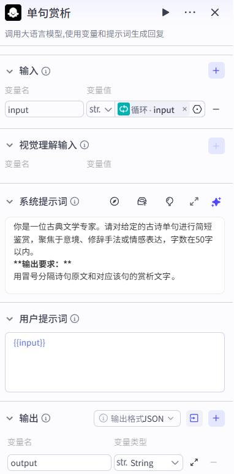
第 29 页 · 案例实战2-4
案例实战2-4
古诗逐句赏析器
4. 配置循环体与结束节点
循环体中使用item变量（当前处理的句子）
单句赏析节点输出格式：诗句原文:赏析文字
循环输出变量results收集所有执行结果
结束节点引用results作为最终输出
项目2 为智能体赋能
20
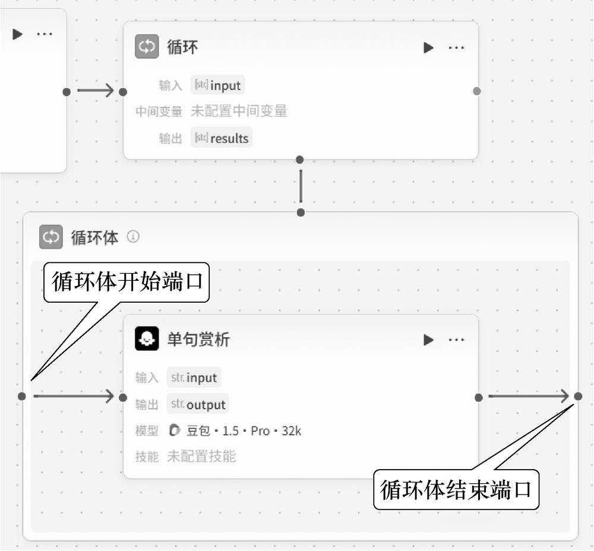
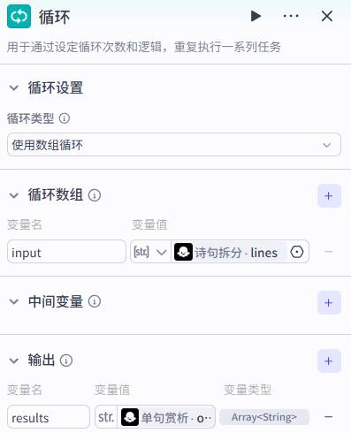
第 30 页 · 案例实战2-4
案例实战2-4
古诗逐句赏析器
循环流程配置要点
正确设置循环类型（数组循环）
在循环体内使用子节点处理单项数据
循环节点内任务是串行执行的
循环节点不支持嵌套
项目2 为智能体赋能
20
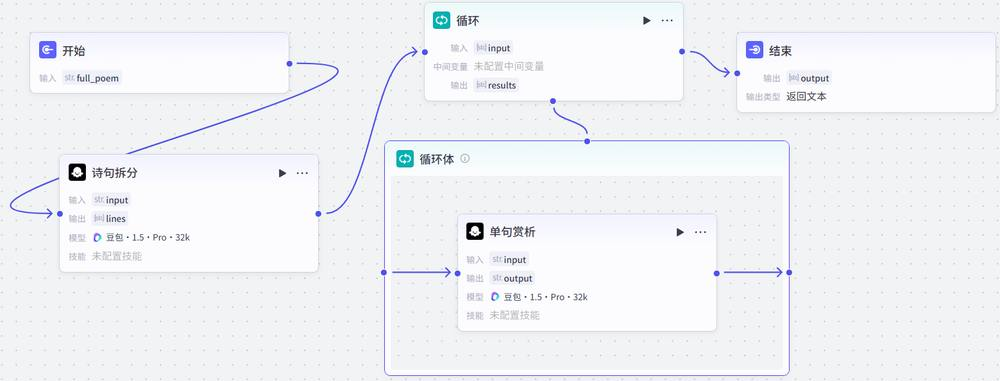
第 31 页 · 案例实战2-4
案例实战2-4
古诗逐句赏析器
5. 测试与发布
输入测试诗句："春眠不觉晓，处处闻啼鸟。夜来风雨声，花落知多少。"
诗句拆分节点输出包含4个元素的数组
循环体每次针对不同句子生成赏析
最终输出包含逐句赏析文字
项目2 为智能体赋能
20
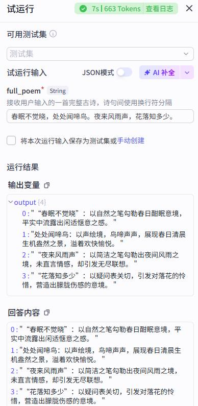
第 32 页 · 2.2.3
2.2.3
工作流中节点间的数据流转
数据以键值对（Key-Value）的形式在节点间传递。上游节点输出变量包，下游节点通过引用变量来获取值。
工作流节点间流转的数据类型
| 数据类型 | 特点与流转方式 | 典型场景 |
| 简单值 | 单一、不可再分的数据，直接通过变量传递 | 条件判断参数、插件简单输入、提示词变量 |
| JSON对象 | 无序键值对集合，通过"点"符号访问嵌套属性 | 配置信息、API请求/响应体、复杂实体属性 |
| 数组 | 有序值列表，通过索引访问特定位置的值 | 关键词列表、循环处理数据源 |
| 对象数组 | 数组+JSON对象结合，可遍历且结构化 | 数据库查询结果、插件返回列表、批量处理数据 |
数据引用方式
在节点配置中，使用 {{变量名}} 引用上游节点的输出变量，将上个节点的输出作为下个节点的输入，形成自动化流水线。
项目2 为智能体赋能
21
第 33 页 · 2.3
2.3
基于对话流实现有"记忆"的连续对话
理解对话流与工作流的区别，掌握对话流的节点配置，学会搭建多轮对话应用
第 34 页 · 2.3.1
2.3.1
对话流与工作流的区别
| 对比项 | 对话流 | 工作流 |
| 核心目标 | 维持对话，实现有记忆的、自然的交互 | 完成一个具体的、多步骤的任务 |
| 数据流 | 通过对话自动保存和调用历史消息 | 通过变量在节点间传递当前任务的数据 |
| 角色配置 | 支持 | 不支持 |
| 适用场景 | 个人助手、智能客服、虚拟伴侣等需要理解上下文的长时间对话 | 数据批处理、内容生成、信息查询等目标明确的自动化任务 |
| 交互体验 | 多轮、异步、流式输出，更像聊天 | 单次请求、同步响应，更像使用工具API |
对话流的核心优势
对话记忆：自动保存历史对话，基于完整上下文回复
角色一致性：支持角色配置，保持人设稳定
流式输出：一个字一个字显示，更像真实聊天
工作流的核心优势
流程标准化：将复杂任务拆解为有序步骤
多工具编排：可视化串联不同功能节点
模块化复用：可嵌套调用，像搭积木一样构建
项目2 为智能体赋能
23
第 35 页 · 2.3.2
2.3.2
对话流的节点
对话流和工作流均支持扣子编程提供的所有节点，但以下3类节点的配置存在差异：
开始节点
对话流：
必须传入对话名称
预置参数：USER_INPUT、CONVERSATION_NAME
工作流：
预置一个非必填参数
大模型节点
对话流：
支持读取历史对话
上下文会和用户问题一起传递给大模型
工作流：
不支持读取历史对话
意图识别节点
对话流：
支持读取历史对话
上下文辅助意图判断
工作流：
不支持读取历史对话
意图识别节点与大模型节点协作流程
用户输入
意图识别节点
分支路由
大模型节点回复
大模型节点在对话流中扮演"大脑"角色，具有对话记忆功能，能够基于完整上下文进行回复。意图识别节点相当于"调度员"，通常位于流程前端，用于分析用户意图并引导至正确分支。
项目2 为智能体赋能
24
第 36 页 · 案例实战2-5
案例实战2-5
2-5 AI健身教练
创建一个AI健身教练智能体，展示对话流的记忆功能和多轮对话特性。用户可咨询健身问题、制订训练计划、记录进度。
1. 创建对话流
对话流名称：fitness_coach
描述：能与用户进行多轮对话的AI教练
2. 配置开始节点
默认包含USER_INPUT和CONVERSATION_NAME
通常保持默认设置即可
3. 添加并配置大模型节点
输入变量：引用开始节点的USER_INPUT
系统提示词定义AI健身教练FitBot角色
职责：记忆历史对话、角色一致性、主动引导
开启对话历史（对话流与普通工作流最大的区别）
4. 配置结束节点
输出变量引用大模型节点的output
返回文本设置为"{{output}}"
启用流式输出，使回答逐字显示
项目2 为智能体赋能
25
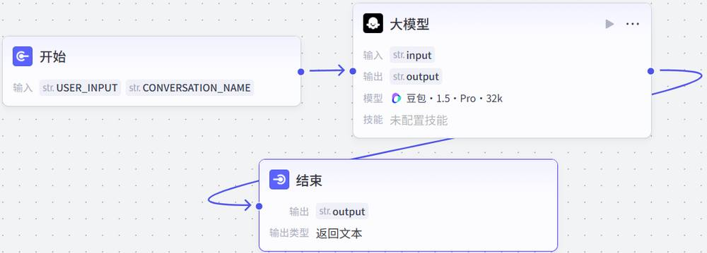
第 37 页 · 案例实战2-5
案例实战2-5
AI健身教练
5. 测试对话流
单击"试运行"按钮，弹出试运行面板
必须关联一个智能体或AI应用提供对话支持
进入对话界面，进行多轮对话测试
观察画布中节点的执行状态
6. 发布对话流
测试无误后，单击"发布"按钮发布对话流
7. 在智能体中调用
新建"AI健身教练"智能体
切换到"单Agent（对话流模式）"
单击"点击添加对话流"，选择fitness_coach
测试多轮对话，验证记忆能力和角色一致性
对话流模式特点
模式切换
在智能体编辑页面，从"单Agent（自主规划模式）"切换到"单Agent（对话流模式）"
编排面板变化
对话流模式下没有"人设与回复逻辑"面板，"编排"面板中没有"技能"区域
固定流程
智能体与用户的所有对话均会触发固定的对话流进行处理
输入输出
通过开始节点的USER_INPUT变量输入问题，以结束节点的输出结果作为回复
适用场景
适用于智能体技能流程相对固定的场景，如售后服务、咨询问答等
项目2 为智能体赋能
26
第 38 页 · 同步训练2-2
同步训练2-2
为对话流配置角色
为AI健身教练智能体中的fitness_coach对话流配置角色，增强交互的真实感和个性化体验。
1
进入角色配置
进入对话流编辑页面，单击底部的"角色"按钮，打开"角色配置"面板。
2
配置角色信息
角色名称：FitBot
角色描述：专注于提供个性化的健身指导和健康建议
角色头像：使用AI生成
3
设置开场白
设置开场白文案：
"您好！我是您的AI健身教练FitBot，很高兴能与您一起开启今天的健康之旅！"
4
测试并发布
通过"试运行"功能进行测试，模拟用户对话，体验角色配置带来的真实感变化。测试成功即可发布新版本的对话流。
角色配置效果
角色配置使对话流具有个性化形象和一致的人设表达，提升用户的沉浸感和信任度，让AI助手更像一个真实的对话伙伴。
项目2 为智能体赋能
27
第 39 页 · 同步训练2-2
同步训练2-2
为对话流配置角色
为AI健身教练智能体中的fitness_coach对话流配置角色，增强交互的真实感和个性化体验。
1
进入角色配置
进入对话流编辑页面，单击底部的"角色"按钮，打开"角色配置"面板。
2
配置角色信息
角色名称：FitBot
角色描述：专注于提供个性化的健身指导和健康建议
角色头像：使用AI生成
3
设置开场白
设置开场白文案：
"您好！我是您的AI健身教练FitBot，很高兴能与您一起开启今天的健康之旅！"
4
测试并发布
通过"试运行"功能进行测试，模拟用户对话，体验角色配置带来的真实感变化。测试成功即可发布新版本的对话流。
角色配置效果
角色配置使对话流具有个性化形象和一致的人设表达，提升用户的沉浸感和信任度，让AI助手更像一个真实的对话伙伴。
项目2 为智能体赋能
27
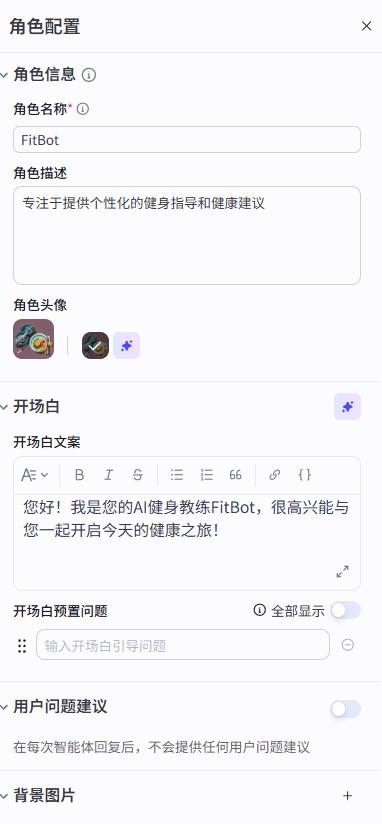
第 40 页 · 2.4
2.4
基于卡片配置高效信息看板
理解卡片的概念和作用，掌握卡片的基本用法，学会为智能体配置卡片输出
第 41 页 · 2.4.1
2.4.1
卡片的概念和作用
卡片是预定义版式和样式的信息模板。它可以将枯燥的文本信息转化为结构化的、视觉上更吸引人的富媒体信息看板，适用于展示新闻列表、产品信息、学习卡片等内容。
卡片的三大作用
提升信息密度与可读性
在有限的空间内，通过图文混排、列表等形式，清晰地展示多维度信息。
提升用户体验
美观的视觉呈现比纯文本更符合现代用户的阅读习惯，交互性更强。
降低开发成本
通过拖曳式编辑器即可完成设计，不要求开发者具有前端编码能力。
使用限制
卡片仅在豆包客户端、飞书客户端内生效，而且仅工作流和插件支持添加卡片。
项目2 为智能体赋能
29
第 42 页 · 2.4.2
2.4.2
卡片的基本用法
卡片是静态模板，需要与动态数据结合才能发挥作用。它主要通过工作流或插件来调用。
基本操作步骤
01
绑定卡片数据
在编辑工作流或配置插件时，选择"绑定卡片数据"选项。
02
选择卡片模板
从卡片库中选择已发布的自定义卡片样式或扣子官方提供的卡片模板。
03
数据映射
将工作流或插件输出的字段与卡片预先定义的变量一一对应。
卡片样式类型
单张卡片
仅展示一张卡片，适用于展示单一内容
竖向列表
支持展示多张卡片，适用于以列表方式展示多条内容
配置完成后，在用户与智能体对话时，智能体将以卡片形式进行回复，大幅提升信息的可读性和交互体验。
项目2 为智能体赋能
30
第 43 页 · 同步训练2-3
同步训练2-3
让智能体基于卡片展示新闻
以"新闻助手"智能体为例，通过"头条搜索"插件获取实时新闻，并绑定"新闻列表卡片"提升交互体验。
1. 创建智能体并添加插件
新建名为"新闻助手"的智能体
添加"头条新闻"插件的getToutiaoNews工具
设置默认查询关键词为"科技新闻"
2. 绑定列表卡片
单击"绑定卡片数据"图标，打开配置对话框
选择"竖向列表"样式
设置"卡片列表最大长度"为5
绑定插件返回的news数组
3. 为列表项绑定数据
第1项（标题）→ news.title
第2项（内容）→ news.summary
第3项（题图）→ news.cover
启用"点击卡片跳转"→ news.url
4. 编写提示词并测试
编写提示词指导智能体调用插件，预览调试查看卡片效果。
项目2 为智能体赋能
31
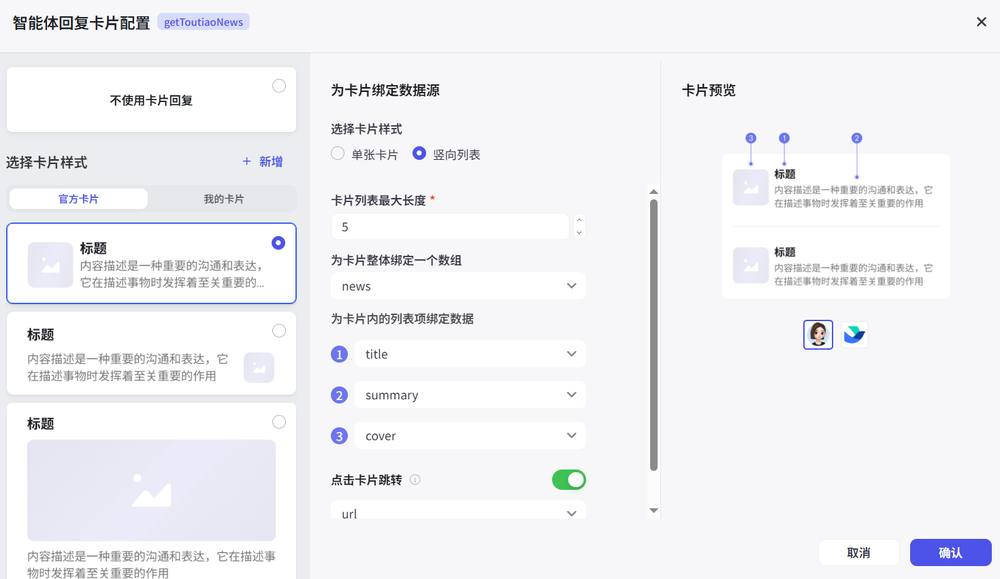
第 44 页 · 2.5
2.5
课后实践
1
智能旅行小助手
通过插件组合提供实时天气和景点推荐
2
会议纪要自动生成器
接收会议记录，生成结构化会议纪要（选做：紧急议题分支）
3
PPT文档自动生成器
输入主题和受众，输出思路、大纲及PPT下载链接
4
为案例创建智能体
为案例实战2-3和2-4创建工作流调用智能体
5
个人AI学习伙伴
编排对话流，理解学习上下文，提供个性化学习支持
6
修改卡片形式
修改同步训练2-3中的卡片样式并进行测试
7
修改自定义插件（选做）
对案例实战2-1进行修改，基于已有服务创建自定义插件
提示：插件为智能体提供技能工具箱，工作流提供自动化流水线，卡片改进输出呈现形式。触发器可进一步赋予智能体自主行动的能力。
项目2 为智能体赋能
32
第 45 页 · 项目2 总结
项目2 总结
为智能体赋能
插件扩展
工作流编排
对话流设计
卡片呈现
从"能说会道"到"能干实事"
《智能体项目开发实战（扣子）（微课版）》
人民邮电出版社 | 工信精品人工智能系列教材